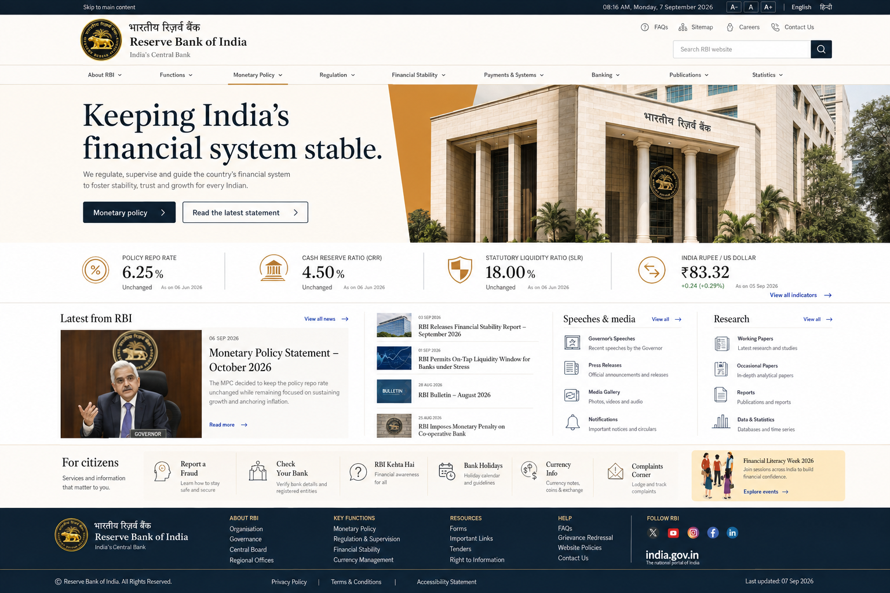

Everything competes
Citizen services, regulatory notices, research and institutional links appear with similar visual weight.
A task-first redesign of the Reserve Bank of India website that helps citizens, regulated professionals and researchers find, verify and use official information with confidence.
RBI serves the public, regulated entities and researchers through one dense information environment. Authority is high; findability is not.
It reframes the homepage around tasks, authority and audience needs while preserving RBI’s formal institutional character.
Users face dense navigation, technical labels and long document feeds with no clear starting point for common tasks.
Citizen services, regulatory notices, research and institutional links appear with similar visual weight.
Department names and regulatory terms force users to understand RBI’s organisation before finding help.
Dates, current status, amendments and related documents are not always visible at the decision point.
The source website and task analysis informed three proto-personas. They are design hypotheses and should be validated through interviews and usability tests.
46 · Teacher · Moderate digital confidence
34 · Compliance manager · Advanced user
25 · Economics researcher · Data confident
People arrive to complain, verify, download or understand—not to browse an organisational chart.
Source, publication date, effective date and document status belong beside the content.
Short summaries can preserve technical accuracy while helping non-specialists choose the correct path.
Entity type, topic, date, document type and status are essential filters for regulatory discovery.
Dense tables and PDFs require responsive summaries, accessible HTML and purposeful download options.
Design one entry experience that supports urgent citizen needs, precise regulatory work and evidence-driven research.
The opportunity is not to replace specialist systems. It is to connect discovery, explanation and handoff across them.
| Capability | Current RBI site | RBI CMS | RBI DBIE | Redesign direction | |
|---|---|---|---|---|---|
| Official information | Strong | Mixed | Strong | Strong | Strong |
| Citizen task guidance | Limited | Indirect | Complaint only | — | Unified |
| Structured search | Limited | Broad | Case based | Data based | Audience + task |
| Regulation status | Inconsistent | — | — | — | Visible |
| Research data | Available | Discovery only | — | Specialist | Connected |
| Unified entry point | Content-heavy | — | — | — | Task-first |
Universal search, urgent alerts, current rates and audience shortcuts.
The visual language combines formal serif headings with highly scannable interface text, restrained shape, accessible contrast and one saffron emphasis.
Navy establishes authority. Blue signals interaction. Saffron is reserved for emphasis.
Georgia / Noto Serif for institutional headings. Inter / Noto Sans for interfaces and data.
Outcome-led labels, minimum 44px targets and visible status information.
Use publication and effective dates. Explain technical terms. Never disguise sample values as current official data.
The complete desktop experience remains central while focused callouts explain the hierarchy, trust signals, discovery patterns and citizen-service decisions.

A clear policy message and two actions replace the original wall of competing links.
Rates show labels, values, status and dates together so context is not separated from the number.
A lead story and short lists make publication scanning deliberate rather than exhaustive.
Fraud, bank verification, holidays and complaints become visible tasks instead of buried destinations.
Institutional utility links remain separate from the primary information hierarchy.
High-value indicators appear early with consistent metadata.
News, speeches and research are separated into predictable groups.
Language, text controls, strong contrast and clear targets are visible from the header.
Citizens, professionals and researchers can begin with their goal without understanding RBI’s internal structure.
Rates, statements and circulars expose dates, status and related information at the moment of use.
The homepage curates high-priority information; specialist detail remains available through focused destinations and filters.
The direction is designed to reduce searching, improve verification and make official information easier to act on.
These are proposed usability targets, not measured outcomes. Validation requires task-based testing with representative participants.
A central-bank website must serve urgency, precision and public trust at the same time.
The redesign creates clearer entry points, but the next phase must test complaint eligibility, regulation discovery, data downloads, bilingual comprehension and mobile document use with real participants.
It should also validate the content-governance model: who maintains summaries, marks superseded documents, connects amendments and ensures that specialist systems remain consistent.